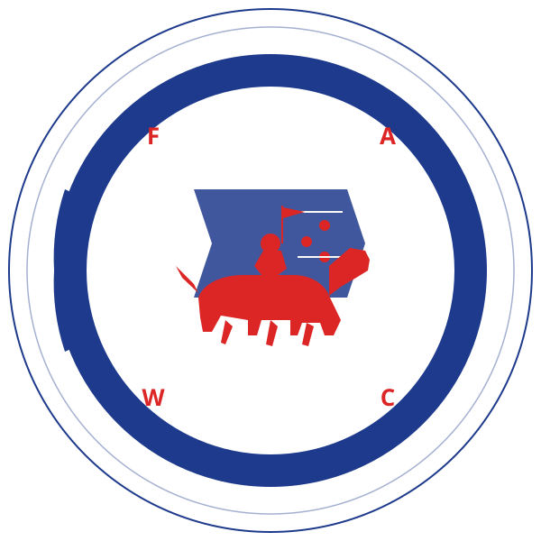

215 E Berry St · Fort WayneAnno MMXXVI · Est. 2026Caffè Vergnano · Torino 1882

il caffè della fortezza
Fortezza
Ke-Ki · On-Ga · Coffee
— Three Rivers · One Fortress —
A heraldic Italian café in downtown Fort Wayne — the city the Miami called Ke-Ki On-Ga, where three rivers meet. Marco & Sofia Castelli pour Caffè Vergnano under the watch of the cavaliere.
When Marco & Sofia Castelli opened Fortezza, they wanted Fort Wayne — Ke-Ki On-Ga, the old confluence — to feel what they grew up with in Northern Italy. A café where the barista knows your name, where coffee is poured slowly and savored. Not fuel. A small ceremony, performed daily.
Long before Fort Wayne, the St. Joseph, St. Marys, and Maumee rivers met where we now stand. The Miami called this confluence Ke-Ki On-Ga. Three streams. One place. One fortezza.
I
Caffè Vergnano.
Turin's oldest roaster, since 1882. Pulled fresh on a traditional lever machine — the way Marco's nonno taught him in the Piedmont.
Espresso · Macchiato · Cortado
Cappuccino · Flat White · Latte
Affogato · Iced Shakerato
The signature Cavaliere
— St. Joseph River —
II
Dolci Italiani.
Sfogliatelle from a Naples-trained baker. Cornetti at five. Cannoli filled to order — no soggy shells, no shortcuts.
Cornetto · Italian croissant
Sfogliatella · Naples lobster-tail
Cannolo · filled fresh, every time
Tiramisù coppa & biscotti
— St. Marys River —
III
Benvenuti.
A small fortress of warm light and worn wood. We greet every guest. By name when we know it. By eye when we don't.
Free Wi-Fi · plenty of outlets
Sidewalk patio in season
Dog-friendly outside
Curbside & pickup orders
— Maumee River —
Una promessa
"Quando entri qui — sei nella fortezza." — When you walk in, you're in the fortress —
— Sofia Castelli, Co-founder
Caffè
1882
Torino
III — The Beans
From Turin. To East Berry.
The Vergnano family has been roasting in Turin since 1882 — perfected in the espresso bars of the Piedmont, where coffee is poured fast and pulled correctly. We're proud to bring it to Ke-Ki On-Ga.
Origin
Turin, Italy
Family Owned
Since 1882
Roast
Medium-dark
Tradition
Four generations
IV — Inside the Fortezza
A coat of arms.
Four corners of every visit — the bar, the case, the press, the gelato. Each one made the way it's done in Italy.
/ I
I
Espresso Bar.
Single, double, ristretto. Pulled on demand and served in a warm porcelain cup.
Caffè Vergnano · Torino 1882
Lever-machine pulls only
Whole milk steamed by hand
/ II
II
Pastry Case.
Cornetti at five. Sfogliatelle from a Naples recipe. Cannoli filled when you order.
Baked daily, not delivered
Tiramisù made weekly in-house
The biscotti are for the espresso
/ III
III
Panini Press.
Pressed under cast iron until the cheese gives. Focaccia from a small bakery on the south side.
The Visconti — our signature
Caprese · Pollo Pesto · Funghi
Breakfast panino until 11A
/ IV
IV
Gelato Banco.
Made in-house weekly. Less fat than ice cream. Stronger flavors. Twelve in rotation.
Pistacchio di Bronte · Sicilian
Stracciatella · folded by hand
Caffè Vergnano · for adults
4.9★
Google Rating · 184 Reviews
1882
Vergnano · Torino
III
Rivers at Ke-Ki On-Ga
12
Gelato Flavors in Rotation
V — What Fort Wayne Says
★ ★ ★ ★ ★
"Best espresso between Chicago and Cleveland. Marco pulled my cortado and remembered me from a single visit two weeks before."
★ ★ ★ ★ ★
"The cannoli are dangerous. The cappuccino is the closest thing to Italy you'll find without flying there."
★ ★ ★ ★ ★
"My son and I have a Saturday morning ritual here. Sofia draws a horse on his hot chocolate every time. We're not going anywhere else."